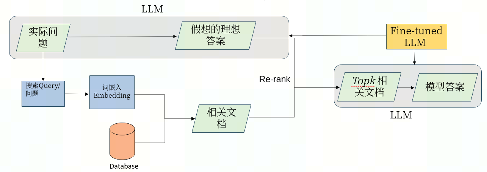
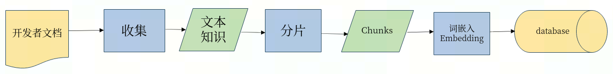

目录
1. 知识问答系统架构
2. 环境安装
3. 数据库建立
4. 文本分割
5. 模型的训练
数据集的制作
模型的训练
6. 系统的评测
7. webui的展示
8. 总结
9. 附录：常见的问题及解决方案
打造 特定领域知识(Domain-specific Knowledge) 问答 系统，具体需求有：
我们提出一种由大模型+搜索的方式，充分利用大模型的思维链的推理能力，将问题的背景文档进行归纳总结，高效、准确的找出其对应的答案，该系统的名字为wen。其总体的架构图为：

由于寒武纪的开发者文档比较复杂，整个搜索过程我们采用问题的关键字检索和重新排序（retrieve & re-rank）的流程。下图为Wen的搜索流程：
我们首先利用大模型得到问题的关键字，然后采用ElasticSearch搜索对应的关键字得到相关的文档。
然后通过将相关文档和大模型的假设答案进行对比（采用cosine相似度进行排序）。然后根据相似度分数得到最相关的文档（详细细节可见app.py中的query_question函数）。
ElasticSearch的一个优点是可以轻松添加新文档到索引中，我们还可以将其他数据与向量一起存储。缺点是性能较慢，因为它会将查询嵌入向量与所有存储的嵌入向量进行比较。这具有线性运行时间，在大型（>100k）语料库中可能过慢。
整个知识问题系统所需要的代码文件均在wen（可直接源码下载）的文件夹下。整个代码的目录结构如下：

此外以下的Python包为整个知识问答系统所必须的的安装包
numpy
tqdm
openai
elasticsearch
flask
可以直接运行wen库中的requirements.txt文件， 即pip install requirements.txt进行安装。
另外我们提供一个基于cambricon pytorch ，包括Chinese-LLaMA-Alpaca、FastChat代码及其依赖项的docker镜像 适配过的代码库分别在：
/workspace/Chinese-LLaMA-Alpaca_mlu
/workspace/FastChat_mlu
首先我们将寒武纪的开发者文档根据小章节进行拆分， 比如
TensorBoard：TensorFlow 的可视化工具包
TensorBoard 提供机器学习实验所需的可视化功能和工具：
* 跟踪和可视化损失及准确率等指标
* 可视化模型图（操作和层）
* 查看权重、偏差或其他张量随时间变化的直方图
* 将嵌入投射到较低的维度空间
* 显示图片、文字和音频数据
* 剖析 TensorFlow 程序
* 以及更多功能
另外也可以将文档API进行分开， 比如：
tf.nn.avg_pool
Performs the avg pooling on the input.
tf.nn.avg_pool(
input, ksize, strides, padding, data_format=None, name=None
)
Each entry in output is the mean of the corresponding size ksize window in value.
Args
- input: Tensor of rank N+2, of shape [batch_size] + input_spatial_shape + [num_channels] if data_format does not start with "NC" (default), or [batch_size, num_channels] + input_spatial_shape if data_format starts with "NC". Pooling happens over the spatial dimensions only.
- ksize: An int or list of ints that has length 1, N or N+2. The size of the window for each dimension of the input tensor.
- strides：An int or list of ints that has length 1, N or N+2. The stride of the sliding window for each dimension of the input tensor.
- padding: A string, either 'VALID' or 'SAME'. The padding algorithm. See here for more information.
- data_format: A string. Specifies the channel dimension. For N=1 it can be either "NWC" (default) or "NCW", for N=2 it can be either "NHWC" (default) or "NCHW" and for N=3 either "NDHWC" (default) or "NCDHW".
- name: Optional name for the operation.
Returns
A Tensor of format specified by data_format. The average pooled output tensor.
通过执行 python ./ingest.py 中的函数对每个的小章节或者API介绍进行编码，并保存。整个领域知识入库的过程如下图所示：

text_split.py文件中提供了根据文本长度和对应的token的长度的不同分割方式，用户可以根据不同的模型要求，选择对应的tokenizer和分割方式。
create_chunk_for_text函数为根据文本的长度进行分割， 比如我们采用的llama模型要求sequence的长度为2048， 除去prompt其它的部分文字，设置对应的长度为2000。
create_embeddings_for_text函数为根据文本对应token的长度进行分割， 比如gpt3.5采用的模型要求token的长度为1000。
由上面的架构图可以看出，当搜索系统找不到对应的背景文本时，系统的答案由大模型给出， 所以整个系统的性能的下限由大模型的性能决定。为了提升整个问题系统在寒武纪开发者文档上的性能，我们在寒武纪开发文档进行了模型的训练，下面为整个训练的过程包括：
数据集的制作
模型的训练
首先我们下载领域知识的文档，将文档中的水印、版权以及无用的小标题去掉，然后根据小的section对文档进行拆分生成一个文本列表， 然后遍历该文本列表，生成对应的数据集。由于该过程有一些定制化修改，用户可以根据自己的需求调用对应的Python包进行处理。
我们主要使用chatgpt和规则算法的方式， 根据给定的文本生成对应的问答数据。具体的流程如下：
python ./data_process.py, 采用chatgpt根据背景文档，生成若干个问答数据， 然后根据问答数据进行筛选。比如对Tensorboard的介绍的问答为：问题：TensorBoard是什么？
回答：TensorBoard是TensorFlow的可视化工具包，提供机器学习实验所需的可视化功能和工具。
问题：TensorBoard可以跟踪和可视化哪些指标？
回答：TensorBoard可以跟踪和可视化损失、准确率等指标。
问题：TensorBoard可以用来查看哪些内容的直方图？
回答：TensorBoard可以用来查看权重、偏差或其他张量随时间变化的直方图。
问题：TensorBoard有哪些功能？
回答：TensorBoard可以可视化模型图、将嵌入投射到较低的维度空间、显示图片、文字和音频数据、剖析TensorFlow程序等，并提供更多功能。
根据API接口（结构比较固定），我们这里采用规则算法（根据模板生成），生成对应的QA数据，如：
{
问题: "您能告诉我 Tensorflow的avg_pool 的源代码吗？",
回答： "Tensorflow的avg_pool 的函数调用如下：
tf.nn.avg_pool(input, ksize, strides, padding, data_format=None, name=None)"
},
{
问题: "介绍Tensorflow的avg_pool的参数。",
回答： "Tensorflow的avg_pool函数的参数如下：
- input: Tensor of rank N+2, of shape [batch_size] + input_spatial_shape + [num_channels] if data_format does not start with "NC" (default), or [batch_size, num_channels] + input_spatial_shape if data_format starts with "NC". Pooling happens over the spatial dimensions only.
- ksize：An int or list of ints that has length 1, N or N+2. The size of the window for each dimension of the input tensor.
- strides: An int or list of ints that has length 1, N or N+2. The stride of the sliding window for each dimension of the input tensor.
- padding: A string, either 'VALID' or 'SAME'. The padding algorithm. See here for more information.
- data_format: A string. Specifies the channel dimension. For N=1 it can be either "NWC" (default) or "NCW", for N=2 it can be either "NHWC" (default) or "NCHW" and for N=3 either "NDHWC" (default) or "NCDHW".
- name: Optional name for the operation."
},
- url: https://github.com/ymcui/Chinese-LLaMA-Alpaca.git
- commit-id：134d22e6b2bde3cd6745ac146d4a55b6b8cb5ad5
- transformers: 4.28.1
- accelerate: 0.19.0
使用cambricon pytorch 提供的torch_gpu2mlu.py 对上面2个依赖做过转换，具体的做法青请参数cambricon pytorch 用户手册
寒武纪开发者文档的 markdown 版本
dataset_dir 中的文件应当是txt文件（我们使用的markdown格式，txt后缀的文件）
lr=1e-5
lora_rank=8
lora_alpha=32
lora_trainable="q_proj,v_proj,k_proj,o_proj,gate_proj,down_proj,up_proj"
modules_to_save="embed_tokens,lm_head"
lora_dropout=0.05
pretrained_model=/data/zhaoying/chinese-alpaca-plus-13B
chinese_tokenizer_path=/data/zhaoying/chinese-alpaca-plus-13B/tokenizer.model
dataset_dir=/data/zhaoying/Chinese-LLaMA-Alpaca_mlu/official_doc_only_user_guide
data_cache=temp_data_cache_dir
per_device_train_batch_size=2
per_device_eval_batch_size=2
training_steps=5000
gradient_accumulation_steps=2
output_dir=output_pt_with_wiki
RANDOM=0
deepspeed_config_file=ds_zero2_no_offload.json
deepspeed --include="localhost:0,1,2,3,4,5,6,7" --master_port 1236 run_clm_pt_with_peft.py \
--deepspeed ${deepspeed_config_file} \
--model_name_or_path ${pretrained_model} \
--tokenizer_name_or_path ${chinese_tokenizer_path} \
--dataset_dir ${dataset_dir} \
--data_cache_dir ${data_cache} \
--validation_split_percentage 0.001 \
--per_device_train_batch_size ${per_device_train_batch_size} \
--per_device_eval_batch_size ${per_device_eval_batch_size} \
--do_train \
--seed $RANDOM \
--fp16 \
--max_steps ${training_steps} \
--lr_scheduler_type cosine \
--learning_rate ${lr} \
--warmup_ratio 0.05 \
--weight_decay 0.01 \
--logging_strategy steps \
--logging_steps 10 \
--save_strategy steps \
--save_total_limit 3 \
--save_steps 2000 \
--gradient_accumulation_steps ${gradient_accumulation_steps} \
--preprocessing_num_workers 8 \
--block_size 512 \
--output_dir ${output_dir} \
--overwrite_output_dir \
--ddp_timeout 30000 \
--logging_first_step True \
--lora_rank ${lora_rank} \
--lora_alpha ${lora_alpha} \
--trainable ${lora_trainable} \
--modules_to_save ${modules_to_save} \
--lora_dropout ${lora_dropout} \
--torch_dtype float16 \
--gradient_checkpointing \
--ddp_find_unused_parameters False
cd ${output_dir}
cp ${pretrained_model}/adapter_config.json adapter_config.json
mv pytorch_model.bin adapter_model.bin
python scripts/merge_llama_with_chinese_lora.py --base_model ${pretrained_model} --lora_model ${output_dir} -output_type huggingface --output_dir ${pt_model_dir}
为上面创建一个问答（Q&A）数据集中生成的数据
lr=1e-4
lora_rank=8
lora_alpha=32
lora_trainable="q_proj,v_proj,k_proj,o_proj,gate_proj,down_proj,up_proj"
modules_to_save="embed_tokens,lm_head"
lora_dropout=0.05
pretrained_model=../chinese-alpaca-plus-13B-cambricon-pt-6.5-epoch/
chinese_tokenizer_path=$pretrained_model/tokenizer.model
dataset_dir=../clean_qa/
per_device_train_batch_size=2
per_device_eval_batch_size=2
training_steps=256
gradient_accumulation_steps=64
output_dir=output_sft_lora_clean_qa_0706_epoch_20/
peft_model=null
validation_file=../qa_datasets_human_filtered/filtered_qa_alpaca_dataset_after_remove_similar.json
RANDOM=0
deepspeed_config_file=ds_zero2_no_offload.json
deepspeed --include="localhost:0,1,2,3" --master_port 12345 run_clm_sft_with_peft.py \
--deepspeed ${deepspeed_config_file} \
--model_name_or_path ${pretrained_model} \
--tokenizer_name_or_path ${chinese_tokenizer_path} \
--dataset_dir ${dataset_dir} \
--validation_split_percentage 0.001 \
--per_device_train_batch_size ${per_device_train_batch_size} \
--per_device_eval_batch_size ${per_device_eval_batch_size} \
--do_train \
--seed $RANDOM \
--fp16 \
--max_steps ${training_steps} \
--lr_scheduler_type cosine \
--learning_rate ${lr} \
--warmup_ratio 0.03 \
--weight_decay 0 \
--logging_strategy steps \
--logging_steps 10 \
--save_strategy steps \
--save_total_limit 3 \
--evaluation_strategy steps \
--eval_steps 20 \
--save_steps 1000 \
--gradient_accumulation_steps ${gradient_accumulation_steps} \
--preprocessing_num_workers 8 \
--max_seq_length 512 \
--output_dir ${output_dir} \
--overwrite_output_dir \
--ddp_timeout 30000 \
--logging_first_step True \
--lora_rank ${lora_rank} \
--lora_alpha ${lora_alpha} \
--trainable ${lora_trainable} \
--modules_to_save ${modules_to_save} \
--lora_dropout ${lora_dropout} \
--torch_dtype float16 \
--gradient_checkpointing \
--validation_file ${validation_file} \
--ddp_find_unused_parameters False
cd ${output_dir}
cp ${pretrained_model}/adapter_config.json adapter_config.json
mv pytorch_model.bin adapter_model.bin
python scripts/merge_llama_with_chinese_lora.py --base_model ${pt_model_dir} --lora_model ${output_dir} -output_type huggingface --output_dir ${sft_model_dir}
URL：https://github.com/ymcui/Chinese-LLaMA-Alpaca.git
commit id：134d22e6b2bde3cd6745ac146d4a55b6b8cb5ad5
使用cambricon pytorch 提供的torch_gpu2mlu.py 对上面2个依赖做过转换，具体的做法青请参数cambricon pytorch 用户手册 source /torch/venv3/pytorch/bin/activate export LD_LIBRARY_PATH=/torch/neuware_home/lib64/:LD_LIBRARY_PATH
# 下面的命令来自 docs/openai_api.md
python3 -m fastchat.serve.controller &
python3 -m fastchat.serve.openai_api_server --host 0.0.0.0 --port 8001 &
python3 -m fastchat.serve.model_worker --gpus 0,1 --num-gpus 2 --model-name ${model_name} --model-path ${model_path}
#for example:
#python3 -m fastchat.serve.model_worker --gpus 0,1 --num-gpus 2 --model-name chinese-alpaca-plus-13B-clean-qa-cambricon-epoch-20 --model-path /projs/AE/zhaoying/projects/Chinese-LLaMA-Alpaca/chinese-alpaca-plus-13B-clean-qa-cambricon-epoch-20
我们这里提供了一个简单的图形界面，在启动fastchat服务后，用户只需要运行 python app.py，修改对应的处理器的IP以及大语言模型的路径名，然后打开对应的IP即可。
如下图所示， 我们可以直接提问， 发送问题，chatbot会给出对应的答案。
寒武纪API文档中一些API接口的介绍

寒武纪开发者手册中一些概念的介绍

知识问答系统的性能变化较大，比如我们因为参数的设置观察到问答的结果充满幻觉或者错误回答，为次我们搭建了一个系统来
使用着可以运行 python evaluate.py, 将根据文字内容进行比较，返回比较正确与错误，最后根据问题的数据，计算整个的准确率。最后会生成一个表格，将问题、背景文本、答案、标准答案、评分对比， 表格的格式如下：
| 问题 | 背景文本 | 答案 | 标准答案 | 评分 |
|---|---|---|---|---|
| TensorBoard是什么？ | TensorBoard：TensorFlow 的可视化工具包 TensorBoard 提供机器学习实验所 需的可视化功能和工具：* 跟踪和可视化损失及准确率等指标* 可视化模型图（操作和层）* 查看权重、偏差或其他张量随时间变化的直方图 * 将嵌入投射到较低的维度空间 * 显示图片、文字和音频数据 * 剖析 TensorFlow 程序 * 以及更多功能 | TensorBoard是TensorFlow的可视化工具包，提供机器学习实验所需的可视化功能和工具。 | TensorBoard是TensorFlow的可视化工具包，提供机器学习实验所需的可视化功能和工具。 | 正确 |
| 您能告诉我 Tensorflow的avg_pool 的源代码吗？ | tf.nn.avg_pool. Performs the avg pooling on the input. tf.nn.avg_pool(input, ksize, strides, padding, data_format=None, name=None). Each entry in output is the mean of the corresponding size ksize window in value. Args: input: Tensor of rank N+2, of shape [batch_size] + input_spatial_shape + [num_channels] if data_format does not start with "NC" (default), or [batch_size, num_channels] + input_spatial_shape if data_format starts with "NC". Pooling happens over the spatial dimensions only. ksize: An int or list of ints that has length 1, N or N+2. The size of the window for each dimension of the input tensor. strides：An int or list of ints that has length 1, N or N+2. The stride of the sliding window for each dimension of the input tensor. padding: A string, either 'VALID' or 'SAME'. The padding algorithm. See here for more information. data_format: A string. Specifies the channel dimension. For N=1 it can be either "NWC" (default) or "NCW", for N=2 it can be either "NHWC" (default) or "NCHW" and for N=3 either "NDHWC" (default) or "NCDHW". name: Optional name for the operation.Returns. A Tensor of format specified by data_format. The average pooled output tensor. | tf.nn.avg_pool(input, ksize, strides, padding, data_format=None, name=None) | tf.nn.avg_pool(input, ksize, strides, padding, data_format=None, name=None) | 正确 |
| 介绍Tensorflow的avg_pool的作用。 | tf.nn.avg_pool. Performs the avg pooling on the input. tf.nnavg_pool(input, ksize, strides, padding, data_format=None, name=None). Each entry in output is the mean of the corresponding size ksize window in value. Args: input: Tensor of rank N+2, of shape [batch_size] + input_spatial_shape + [num_channels] if data_format does not start with "NC" (default), or [batch_size, num_channels] + input_spatial_shape if data_format starts with "NC". Pooling happens over the spatial dimensions only. ksize: An int or list of ints that has length 1, N or N+2. The size of the window for each dimension of the input tensor. strides：An int or list of ints that has length 1, N or N+2. The stride of the sliding window for each dimension of the input tensor. padding: A string, either 'VALID' or 'SAME'. The padding algorithm. See here for more information. data_format: A string. Specifies the channel dimension. For N=1 it can be either "NWC" (default) or "NCW", for N=2 it can be either "NHWC" (default) or "NCHW" and for N=3 either "NDHWC" (default) or "NCDHW". name: Optional name for the operation.Returns. A Tensor of format specified by data_format. The average pooled output tensor. | Performs the avg pooling on the input. | Performs the avg pooling on the input. | 正确 |
本系统针对特定领域知识问答系统的问题，进行了方案的优化。不难发现：传统的搜索模式、LLM 的 Fine-Tuning、Prompt Engineer 等方式均存在不同程度的缺陷。该方法将本地知识通过传统搜索框架进行处理，并作为答案的基础数据源。这保证了答案的精准和可靠。同时基于 Prompt Engineering 激发 LLM 的自然语言理解、生成和简单推理能力，对用户的问题预处理、对原始答案进行加工。从而提供了更加智能和友好的交互方式。
经过分析比较后，决定探索 LLM + 搜索 的方式进行处理，并在寒武纪的开发者文档的具体应用场景进行验证。通过在数据集上面的评测，该系统比端到端的大模型的性能提升了20%。相比较与流行的langchain系统，本体系采用在特定领域的文档上进行训练，提高系统性能的下限，另外采用训练后模型的答案进行搜索，对对应背景文档的召回率更高。相比langchain， 用户也可以更好的扩展。
如果答案是错误的，这仅仅意味着上下文没有正确传递或没有足够的数量。要解决这个问题：
增加返回的文档数量（取前 3 到 5 个） - 并且不要使用非常高的数字，否则信噪比会很低，并且答案将不正确。
确保您输入的查询/问题包含足够的上下文来获取相关文档：这对于询问“美国赢得了多少枚奖牌？”是显而易见的。与询问“美国在 2020 年夏季奥运会上赢得了多少枚奖牌？”相比，获取相关内容的可能性较小。因此，查询会极大地影响您的检索。
减小块大小。我假设所有文档都很大，您必须将它们分成更小的部分。同样，由于信噪比较低，您需要调整文档块的大小，通常在 500 左右，但需要进行调整。虽然它不会产生巨大的差异，但肯定会提高性能和答案质量。
在使用开源模型时，这是一个巨大的问题。即使他们接受了指令调整，他们也常常无法正确完成句子。
简单的解决方法是：使用他们接受过培训的提示。这意味着，使用提示：
不会工作
根据下面的文章，回答问题。
- 第1条
- 第2条
- 第3条
问题：嘿嘿！怎么了？
回答：
而且模型无法正确给出答案的可能性更高。因为模型是在这样的结构上进行训练的：
<|提示器|>
- 操作说明 - -
<|提示器|>
<|文本结束|>
<|助理|>
-- 完成 ---
现在，在这样的模型中，使用通用提示符不会有帮助，我们需要更改搜索系统中的提示符：
可能会很好地工作
<|提示器|>
根据以下文件，尝试回答问题。不要使用任何其他信息来回答...
文件：
- 文件1
- 文件2
- 文件3
`
问题：嘿嘿！怎么了？
答案：<|提示器|><|endoftext|><|助手|>
注意：不同型号会有不同的提示样式。
因此，
修复 1：更改提示。通用的不会有帮助。
修复 2：使用更好/更大的模型。与 GPT一样，您对搜索系统的默认提示不应该有任何问题，但仍然更改提示将帮助您。
修复 3：更改生成参数。尝试调整温度、重复惩罚等等。它们对答案有巨大的影响。